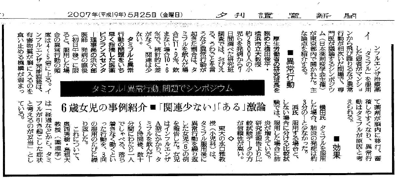

去る5月20日、１時〜５時、東京大学医学部構内において、日本薬剤疫学会が主催し、タミフルと異常行動死・突然死との因果関係が議論された。
浜（ＮＰＯ法人医薬ビジランスセンター：薬のチェック代表）は、シンポジストの一人として、タミフル服用後の異常行動死や突然死、急性心肺停止の原因はタミフルであると考えるべきであることを、インフルエンザの自然経過、タミフルの性質、動物実験の結果、これまでの突然死例・異常行動例などの検討、横田班の結果の初日昼間に異常言動が高頻度になることなどから十分に証明した。
これに対して、横田教授およびその統計解析をした藤田教授らは、何ら有効な反論をすることができなかった。横田氏は、「そういうこと（註）を議論するなら私は退席する」とまで言い、動物実験や症例検討などからみたタミフルの性質に関することなど、疫学調査の解釈の前提として最も重大な問題の議論を避けた。
註：動物実験や症例検討などからみたタミフルの性質に関すること。
なお、統計解析を担当した藤田教授が示した追加解析の結果は、初日の昼の異常言動の発生が突出して有意に高率であることをむしろ認める結果であり、何ら否定するのに有効なデータではなかった。
このシンポジウムはそもそも、3月２２日に柳沢厚生労働大臣が、異常行動だけでなく突然死も含めて因果関係を再討論することを国会の場で明言したことを受け、因果関係の見直しが行われることになったことを受けて開催されたものである。このシンポジウムにおいて横田班が有効な反論をなしえなかったことは、因果関係の認定に向けての大きく前進することになったといえよう。
なお、読売新聞2007.5.25夕刊（東京版）に、当日の議論の主要部分が報道されたので、その切抜きを引用する。